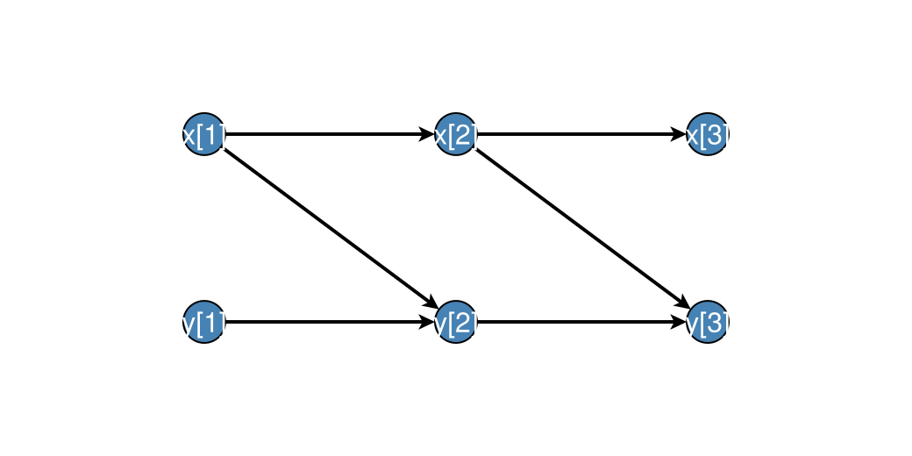

Time-indexed graphs
Discrete-time CDMs often share a time-invariant lag structure. Unroll that structure to a static DAG over occasions t = 1:T, then apply standard identification on the unrolled graph.
CausalDynamics.LaggedEdge — Type
LaggedEdge(parent, child, lag)Directed edge from parent at occasion t - lag to child at occasion t.
lag == 0 is contemporaneous (same occasion). lag ≥ 1 is a lagged parent.
CausalDynamics.TemporalDAGSpec — Type
TemporalDAGSpec(variables, edges)Time-invariant lag structure over named endogenous variables.
Arguments
variables: symbols appearing in the model (documentation / validation)edges: vector ofLaggedEdgeor(parent, child, lag)tuples
CausalDynamics.TemporalUnrolling — Type
TemporalUnrollingResult of unrolling a TemporalDAGSpec for T occasions.
Fields
T: number of occasionsspec: source specificationgraph: unrolledDiGraphnode_index:(variable, t) => node idindex_node: node id=> (variable, t)(1-based indexing)
CausalDynamics.unroll_temporal_dag — Function
unroll_temporal_dag(spec::TemporalDAGSpec, T::Int)Unroll spec to a static DAG over occasions t = 1:T.
Edges (parent, child, lag) become parent[t-lag] → child[t] for each valid t.
CausalDynamics.temporal_node — Function
temporal_node(unrolling, variable, t)Return the node index for variable at occasion t in unrolling.
CausalDynamics.temporal_node_label — Function
temporal_node_label(unrolling, node)Human-readable label "var[t]" for a node index in unrolling.
CausalDynamics.d_separated_temporal — Function
d_separated_temporal(unrolling, treatment, t_treat, outcome, t_outcome, conditioned)d_separated on the unrolled graph for (treatment, t_treat) and (outcome, t_outcome). conditioned is a vector of (variable, t) pairs.
CausalDynamics.temporal_backdoor_adjustment_set — Function
temporal_backdoor_adjustment_set(unrolling, treatment, t_treat, outcome, t_outcome)Backdoor adjustment set for the effect of treatment at t_treat on outcome at t_outcome in the unrolled DAG. Returns a Set of node indices into unrolling.graph.
CausalDynamics.temporal_backdoor_adjustment_nodes — Function
temporal_backdoor_adjustment_nodes(unrolling, treatment, t_treat, outcome, t_outcome)Like temporal_backdoor_adjustment_set but returns Set of (variable, t) pairs.
Plotting an unrolling
With DAGMakie.jl loaded, dagplot_temporal places occasions left→right and variables as rows (same grid as DAGMakie.dagplot_time_indexed):
using CausalDynamics, DAGMakie, CairoMakie
spec = TemporalDAGSpec(
[:x, :y],
[(:x, :x, 1), (:y, :y, 1), (:x, :y, 1)],
)
u = unroll_temporal_dag(spec, 3)
fig, ax, p = dagplot_temporal(u; figure_size = (520, 260))
fig
Confounded treatment (book Ch. 28)
using CausalDynamics
spec = TemporalDAGSpec(
[:x, :y, :a, :c],
[
(:c, :c, 1), (:a, :c, 1), (:c, :a, 0), # confounder dynamics + confounding
(:x, :x, 1), (:a, :x, 1), (:c, :x, 1), # state evolution
(:x, :y, 0), # measurement
],
)
u = unroll_temporal_dag(spec, 10)
# Effect of A_{t-1} on X_t: adjust for C_{t-1}
adj = temporal_backdoor_adjustment_nodes(u, :a, 2, :x, 2)
# Set containing (:c, 1)See also Utilities, Discrete-time CDMs, and the CDCS book Ch. 28.